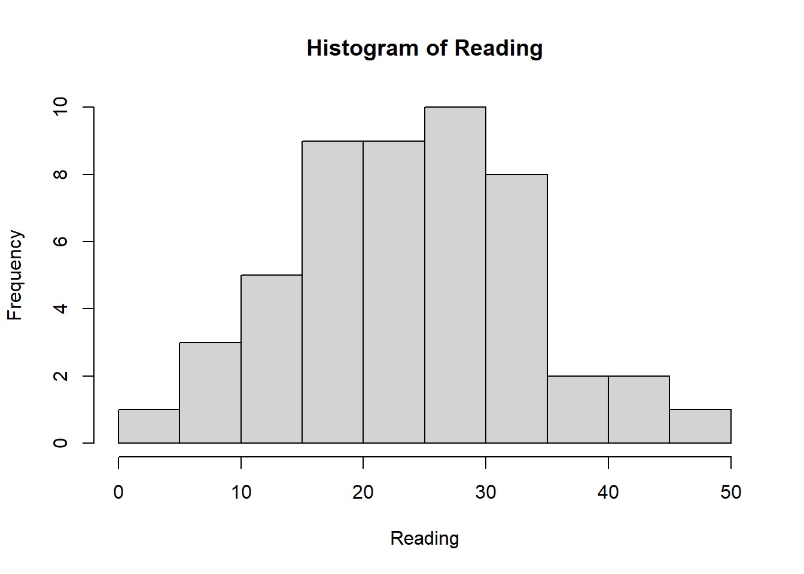

Reading <- c(47, 2, 44, 41, 7, 6, 35, 38, 35, 36,
10, 11, 14, 14, 30, 30, 32, 33, 34, 32,
31, 31, 15, 16, 17, 16, 15, 19, 18, 16,
25, 25, 26, 26, 27, 29, 29, 28, 29, 27,
20, 21, 21, 21, 24, 24, 23, 20, 21, 20)
hist(Reading)